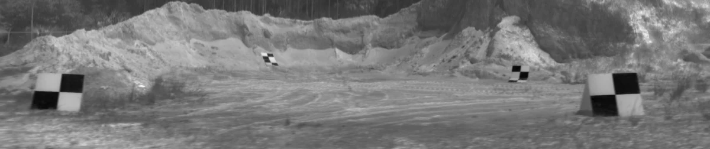
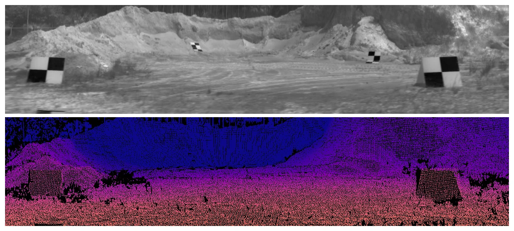
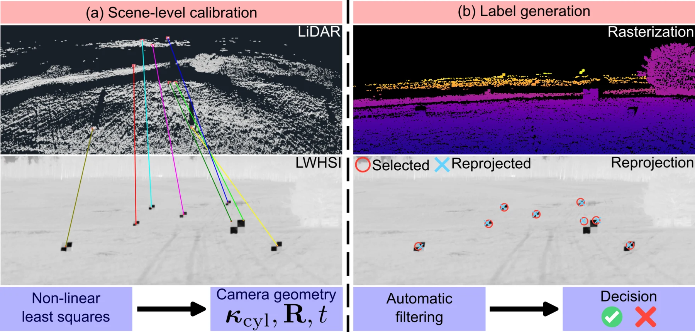

A
Real field data
Off-road and mixed-terrain scenes captured by rotating line-scan instruments—not synthetic renderings.
NeurIPS 2026 · Evaluations & Datasets
IH-Depth is a curated benchmark for monocular metric depth estimation from real-world longwave infrared hyperspectral imagery in challenging off-road environments.

01 / THE DATASET
Standard monocular depth systems depend on visual cues that become brittle in darkness, low texture, dense vegetation, and strong domain shift.
Longwave infrared hyperspectral imaging captures emitted thermal radiance across hundreds of wavelengths. IH-Depth turns raw, unregistered sensing from the public Invisible Headlights collection into trustworthy sparse metric depth supervision for learning and evaluation.
Explore the source IH collection ↗
Off-road and mixed-terrain scenes captured by rotating line-scan instruments—not synthetic renderings.
Cleaned, high-resolution LiDAR is projected into image space with invalid pixels explicitly masked.
Fixed train/test splits, camera geometry, correspondences, baseline adapters, and a common evaluator.
02 / CURATION
A scene-level pipeline designed for the panorama-like geometry of a rotating pushbroom sensor.

Annotators select at least eight identifiable 2D–3D correspondences per scene.
Nonlinear least squares jointly fits cylindrical intrinsics and the LiDAR-to-camera pose.
Statistical outlier removal and front-most rasterization produce sparse metric labels.
Quantitative thresholds and visual inspection reject unstable or misaligned projections.
QUALITY POLICY
03 / COMPOSITION
Different paths in the source collection can revisit the same physical location. IH-Depth groups scenes by physical spot before splitting, reducing overlap and making the test set a harder measure of spatial generalization.
SCENE COVERAGE
04 / BENCHMARK
Metrics are evaluated only at valid LiDAR-supported pixels on the 10-scene test split. Lower is better for AbsRel and RMSE.
STRONGEST INITIAL BASELINE
Adapting the input projection to consume all spectral bands gives the best overall starting point.
| Input | Method | AbsRel ↓ | RMSE (m) ↓ | SSI-AbsRel ↓ | SSI-RMSE (m) ↓ | δ1 ↑ | SSI-δ1 ↑ |
|---|---|---|---|---|---|---|---|
| Broadband | Depth Pro | 0.553 | 28.180 | 0.210 | 12.064 | 0.099 | 0.675 |
| Depth Anything V2 | 0.788 | 36.055 | 0.259 | 14.207 | 0.000 | 0.566 | |
| UniDepthV2 | 0.492 | 22.379 | 0.134 | 9.749 | 0.009 | 0.843 | |
| UniK3D | 0.582 | 26.247 | 0.162 | 10.647 | 0.007 | 0.768 | |
| LWHSI · learned | Depth Anything V2–HSI | 0.715 | 31.338 | 0.193 | 10.350 | 0.000 | 0.685 |
| UniDepthV2–HSI best | 0.489 | 22.194 | 0.130 | 9.274 | 0.013 | 0.853 | |
| UniK3D–HSI | 0.526 | 23.735 | 0.134 | 9.284 | 0.006 | 0.839 | |
| LWHSI · physics | Hyperspectral optimization | 1.983 | 68.528 | 0.418 | 20.031 | 0.114 | 0.346 |
| Bispectral | 9.745 | 389.727 | 0.355 | 15.914 | 0.057 | 0.400 | |
| Quadspectral | 6.920 | 302.867 | 0.354 | 16.538 | 0.067 | 0.386 |
Initial zero-shot and adapted-baseline results. The benchmark is intended as a starting line, not a solved problem.
05 / ACCESS
Data artifacts are released under CC BY 4.0. The devkit and evaluator are MIT licensed.
HUGGING FACE
GITHUB
QUICKSTART
The evaluator reports common metric and scale-and-shift-invariant depth measures on the fixed test split.
# clone and install
git clone https://github.com/cvail-research/ih-depth-dataset.git
cd ih-depth-dataset && uv sync
# evaluate a mirrored prediction tree
uv run python ihd/ihd_evaluator.py GT_DIR PREDICTION_DIRA NEW TESTBED FOR PASSIVE PERCEPTION
IH-Depth makes that question measurable.